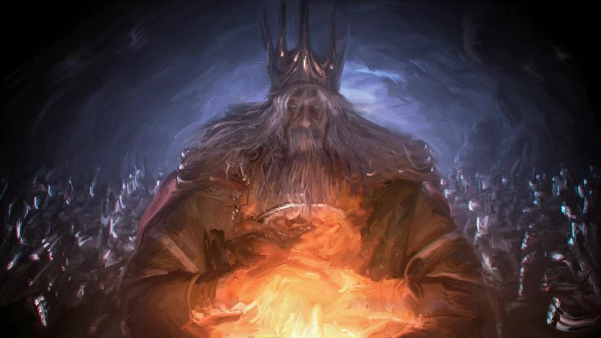

Gwym, Lorde das Cinzas |
||
|---|---|---|
|
 |
Gwyn é o boss final do Dark Souls original, rei de Lordran, o
mais poderoso dos Senhores das Cinzas, e origem de tudo sobre
Dark souls, ele era conhecido também como "Senhor da Luz Solar",
junto do Nito e
Izalith ele
trouxe o fim da era dos dragões. Gwyn Comandou centenas de seus
cavaleiros para espalhar a era do fogo e supervisionar seu
reinado.
Gwyn se sacrificou a milhares anos antes do inicio de Dark Souls
1 para a primeira chama, seus motivos são desconhecidos mas é
certeiro que sua principal motivação era prolongar a era do
fogo.
A tempo de ser encontrado em Dark Souls 1, Gwyn não é nada além
de uma casca
apenas uma lembrança do seu passado glorioso que nunca voltara,
ele está esqueletico e fraco, porém mesmo com isso, a alma de
Gwyn é considerada "algo de extremo poder".
Gwyn não é encontrado em lugar nenhum em Dark Souls 3, apenas
citado, pois o mesmo ja se encontra morto a diversos
milénios.
Gwyn realmente teve um reino bom e prospero, mas ao ver a sua
era de dominio se esvaecer, ele sentiu medo e fez de tudo para
protege-lo, se sacrificando para expandir o tempo de vida da
chama, coisa que, fez a fornalha da primeira chama explodir em
fogo, acobrindo e pulverizando tudo em volta com o calor.
"Uma vez vivo, agora morto vivo, e
você, um herdeiro adequado a padre Gwyn é
E te imploro.
Sucede ao Senhor Gwyn, e herde o Fogo do nosso mundo.
Tu
porás fim a este crepúsculo eterno e evitarás mais
sacrifícios de mortos-vivos."
-Ilusão de Gwynevere, revelando o destino do morto-vivo escolhido para suceder seu pai, Lorde Gwyn.
{kind=link}